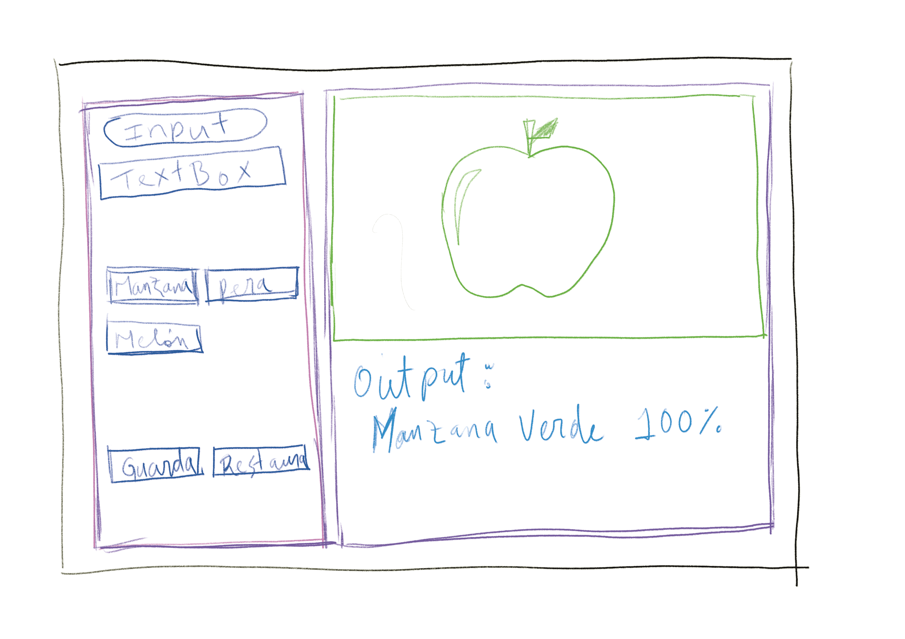
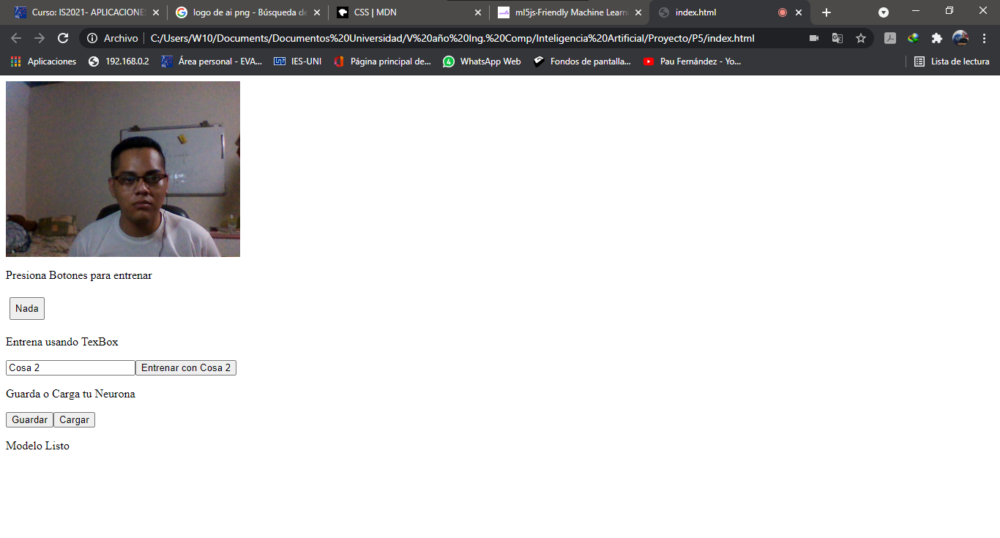

1. Introducción
Los sistemas informáticos orientados a la automatización hoy en día son muy importante para el desempeño empresariales, esto debido a que se puede mejorar en gran manera los servicios que ofrecen las diferentes industrias, logrando tener una mejor demanda y una mayor producción, también evitando hasta en un 95% los errores, por otro lado se logran resolver problemas complejos, todo esto gracias a la inteligencia artificial, ayudando a las personas en sus tareas diarias, evitando tiempo extendido en ciertas tareas y fallos a causa de la repetición de patrones laborales.
Debido a esto se plantea el desarrollo de un sistema de reconocimiento y clasificación de objetos, el cual trata de emular la forma como los humanos percibimos la información visual mediante el uso de dos cámaras ópticas, que actúan como nuestros ojos, y un CPU que procesa la información en una “forma inteligente”. La compleja tarea de simular el sentido de la vista es dividida en un conjunto de tareas más simples, que abarcan desde la captura de las imágenes hasta el reconocimiento de objetos en la escena tridimensional.
2. Obejtivo General
- Diseñar un sistema de reconocimiento capaz de aprender a clasificar objetos del espacio tridimensional real, mediante su entrenamiento a través de ejemplos previos, siendo este capaz de emular la capacidad visual de un humano.
3. Obejtivos Específicos
- Desarrollar la programación de una neurona artificial capaz de aprender, recordar y reconocer imágenes, enfocados en sistemas de agentes artificiales.
- Extraer diferentes características de los posibles objetos detectados en la escena para su posterior reconocimiento.
- Diseñar un modelo del software que sea duradero, funcional y multiplataformas
4. Planteamiento del problema
En las industrias nicaragüenses, los avances en el ámbito de la automatización con inteligencia artificial son muy escasos, en su mayoría por miedo a lo desconocido, al cambio de nuevas tecnologías automatizadas, sin embargo, esta rama de la informática orientada a las industrias es muy importante para el desarrollo tanto de una empresa como de todo un país en general, porque esto genera mejores resultados en los procesos o flujos de trabajo diarios que evidentemente no se logra a modo antiguo.
Hoy en día la inteligencia artificial permite el uso de tecnologías como el aprendizaje profundo para detección de rostros (DL-DF, Deep-learning facial detección), optimización de rostros en tiempo real con nuevas superposiciones, identificación de objetos y de escenas, mejorando la detección en tiempo real, entre muchas cosas más.
Las empacadoras de producto, deben realizar una selección de estos, esto genera mucho tiempo, por otro lado, hace que los trabajadores en dichos puestos tengan problemas de estrés y tiendan a confundirse en los productos seleccionados, entonces con este reconocedor inteligente el proceso se hará mucho más rápido y con un margen de error casi en su totalidad reducido a cero.
5. Encontrar Experto Humano
Como bien sabemos un experto humano almacena conocimientos y experiencias para luego aplicarlos en la realización de tareas de una manera rápida y óptima, de la cantidad de información y experiencias guardadas, depende su efectividad. Este es el principio que da origen a los sistemas expertos. En este proyecto el experto humano será el desarrollador en computación, una persona capaz de programar algoritmos complejos para ser implementados en un sistema de reconocimiento con inteligencia artificial que sea voraz y ejecute su empeño de la mejor manera posible.
6. Diseñar Sistema Experto
Los SE en diseño ven este proceso como un problema de búsqueda de una solución óptima o adecuada. Las soluciones alternas pueden ser conocidas de antemano o se pueden generar automáticamente probándose distintos diseños para verificar cuáles de ellos cumplen los requerimientos solicitados por el usuario, esta técnica es llamada “generación y prueba”, por lo tanto, estos SE son llamados de selección. En áreas de aplicación, la prueba se termina cuando se encuentra la primera solución; sin embargo, existen problemas más complejos en los que el objetivo es encontrar la solución más óptima.
La expansión de los límites del Diseño puede ser entendida como el resultado de dos grandes factores. Por un lado, el avance se da por la aparición de nuevas formas de trabajo, tecnologías, actores sociales y necesidades. Por el otro, debido a la autoconciencia de que ciertas prácticas, como el Diseño no experto, también entran en un sentido amplio en el campo del Diseño.
En este trabajo tomaremos dos tipos que pueden desarrollarse; trataremos con el Diseño experto y el Diseño difuso, de cuya observación se extraen aprendizajes que aportan a la reconsideración de las prácticas académicas y a repensar el modelo actual de sustentabilidad en la industria.
7. Elegir herramientas de desarrollo
La construcción de un Sistema Experto no es una tarea sencilla, debido a que involucra mucha participación de distintas personas, cada una de las cuales aportará algo para que el Sistemas Expertos a desarrollar sea robusto y fácil de usar y mantener. Además, se deben hacer varias elecciones en cuanto al desarrollo del Sistema Experto una de ellas es elegir que herramienta utilizar para su estructuración.
A continuación, una lista de las herramientas que se utilizaran para desarrollar este Sistema Experto:
- Librería ML5 es aprendizaje automático para la web en su navegador web. tiene como objetivo hacer que el aprendizaje automático sea accesible para una amplia audiencia de artistas, programadores creativos y estudiantes. La biblioteca brinda acceso a modelos y algoritmos de aprendizaje automático en el navegador, que se basa en TensorFlow.js sin otras dependencias externas lo que lo hace en una herramienta simple de controlar
- Librería P5 es una biblioteca de JavaScript para la programación creativa, que busca hacer que programar sea accesible e inclusivo para artistas, ¡diseñadores, educadores, principiantes y cualquier otra persona!
- JavaScript nos permite manejar operaciones matemáticas aceleradas por GPU y gestión de memoria para algoritmos de aprendizaje automático, orientado en las tecnologías de TensorFlow.
- HTML es un lenguaje de marcado que se utiliza para el desarrollo de páginas de Internet. Se trata de las siglas que corresponden a HyperText Markup Language, es decir, Lenguaje de Marcas de Hipertexto.
- CSS (en inglés Cascading Style Sheets) es lo que se denomina lenguaje de hojas de estilo en cascada y se usa para estilizar elementos escritos en un lenguaje de marcado como HTML. CSS separa el contenido de la representación visual del sitio.
- Cámara ya sea integrada en las laptop o externa, cabe destacar que la calidad de imagen de la cámara debería ser buena, pero este caso de demostración no se cuenta con una cámara de alto enfoque asi que se hará el mejor esfuerzo posible.
- ID Integrated Development Environment un entorno de desarrollo integrado (IDE) es un sistema de software para el diseño de aplicaciones que combina herramientas del desarrollador comunes en una sola interfaz gráfica de usuario (GUI). Para este proyecto estaremos utilizando el Entorno integrado de desarrollo Visual Studio Code desarrollado por Microsoft para Windows, Linux Y MacOS, para el desarrollo de todos los algoritmos y el estructurado de etiquetado para la página web.
8. Construir Prototipo
La construcción de este sistema se diseñó primeramente de forma arcaica planteando la idea en un bosquejo utilizando un software libre de dibujo, se empezó dejando volar la imaginación e intentar darle un diseño fácil y amigable.
A continuación, se muestran las imágenes de lo que fue el primer diseño o prototipo

Como se puede observar al inicio se planteaba la idea de tener dos columnas, a la derecha un botón de entrada para validar el nombre que se escriba en el campo de texto, otra sección con tres botones según los elementos mas comunes que se utilizaran en la industria. Por último, tenemos una sección donde se muestra los botones de guardar y restaurar la base de datos. Luego tenemos un contenedor a la derecha donde se pretendía tener la captura de la cámara y la salida de los datos procesados.
A continuación, se presenta las plantillas de la información del desarrollador, que no es menos importante:
En esta parte no hay mucho que decir, aquí simplemente se describe la información del desarrollador, sus contactos (redes sociales) y cierta información personal.
A continuación, se muestra el boceto de la parte de información general del proyecto, cabe mencionar que al principio se pretendía solamente hablar de la misión y visión del sistema experto, pero esa idea se dejó atrás un tiempo después y se concluyó por realizar una información general des sistema experto. Que mostraremos a continuación en la ilustración:
En este se muestran la información o documentación del sistema que veremos mas adelante en la parte de refinamiento.
Se muestra la imagen de la primera estructura que se creo del sistema experto:

9. Refinamiento y Generalización
En este apartado se muestran los cambios que se agregaron al diseño inicial, bueno para empezar se realizaron cambios bastante notorios, decidí usar dos columnas y dividir la columna izquierda en tres filas. Asi como también agregar un encabezado que contiene un menú, con redireccionamientos a la documentación general, a un curso de programación en ML5 y a la información del desarrollador. Asi mismo esta un banner que muestra una breve descripción del sistema experto de reconocimiento de imágenes.
A continuación, muestro el boceto final con todos los cambios finales que se hicieron en el sistema:

Como se puede apreciar se hizo un cambio general, con el propósito que todo se ajuste a la pantalla, tenemos dos secciones una donde están los botones para que el usuario controle el sistema y otra donde se visualiza las imágenes capturadas en tiempo real, asi mismo agregue unas cuantas ilustraciones, donde muestra que es, una manzana, un gato, un celular, una persona, etc. Todo se puede ver y procesar en tiempo real y se puede entrenar a la neurona con cualquier imagen de referencia.
10. Manteamiento y Puesta al día
En esta sección mostraremos una captura del sistema puesto en funcionamiento en la web y como quedo finalmente.
A continuación, muestro la parte de la información del desarrollador:
Mostraremos como final el documento general del proyecto:
11. Conclusión
A modo de conclusión, quiero dar una valoración personal sobre el trabajo realizado. Ya que gracias a las nuevas técnicas aprendidas para el desarrollo del proyecto en los que se involucra la programación y las aplicaciones gráficas y de modelado de diseño, se podrá llevar a la realidad este proyecto, por otra parte, quiero dejar por escrito que pretendo en un futuro agregar líneas de mejoras en este proyecto.
Por último, quisiera decir que, puesto que han sido muchas las horas empleadas en este proyecto, y que todo este trabajo me ha supuesto un gran esfuerzo, al final el resultado ha merecido la pena, y que ha sido una gran satisfacción para mí el poder verlo todo acabado y en funcionamiento.
12. Bibliografía
- McCarthy, L. L. (1 de 10 de 2020). P5.js Official. Obtenido de Processing Foundation: https://p5js.org/es/
- Microsoft. (6 de 4 de 2020). Visual Studio Code Store. Obtenido de https://visualstudio.microsoft.com/es/
- Technologies, W. (3 de 5 de 2018). MDN Web Docs Developer. Obtenido de https://developer.mozilla.org/es/docs/Learn/JavaScript/First_steps/What_is_JavaScript
- TensorFlow. (3 de 06 de 2020). NETLIFY. Obtenido de https://ml5js.org/
13. Archivos (Documentos y Aplicación)
PROCESAMIENTO Y ALMACENAMIENTO DE DOCUMENTOS Compartir el archivo del video
Plataforma web de almacenamiento: GOOGLE DRIVE
Nombre del Archivo: Sistema de reconocimiento de imágenes